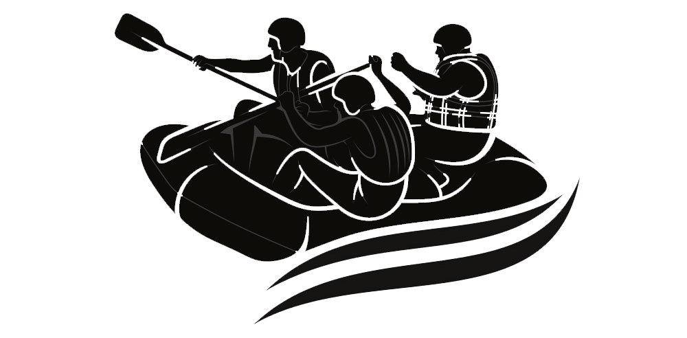

Overview
Purpose
Creating an online presence for our rafting company accomplishes several goals. Firstly, it enables us to market our exhilarating rafting experiences to adventure seekers via our website and social media accounts. Second, by eliminating manual labor and optimizing our processes, putting in place an online booking system makes reservations easier for our clients. Furthermore, our website functions as an all-inclusive information center, offering specifics about our different excursions, costs, security protocols, frequently asked questions, and contact details.We can build a sense of community and loyalty by actively engaging with our customers on social media and communicating with them through updates, special offers, testimonials, and interesting content. Encouragement of reviews and comments helps us develop our services and builds our reputation. Finally, we want to establish our company as an authority in the field by educating our audience with educational content about safety advice, rafting methods, and environmental conservation initiatives. All things considered, having a strong online presence is essential to expanding our clientele, boosting reservations, raising client happiness, and propelling company expansion.
Audience
Our target audience for the white-water rafting website includes adventure seekers, outdoor enthusiasts, and thrill-seekers who are passionate about experiencing the adrenaline rush of thrilling white-water rafting adventures. These individuals typically range from 18 to 45 years old, actively seek outdoor recreational activities, and are drawn to exciting experiences in natural settings.
1. Are you looking for an exhilarating outdoor adventure that will get your heart racing and adrenaline pumping?
Answer: Yes! Our rafting trips offer thrilling experiences amidst stunning natural landscapes, providing the perfect opportunity for adventure seekers to satisfy their craving for excitement.
2. Do you enjoy exploring the great outdoors and immersing yourself in nature's beauty while engaging in exciting activities?
Answer: Absolutely! Our rafting excursions take you on thrilling journeys down rushing rivers, surrounded by breathtaking scenery, allowing you to fully immerse yourself in the beauty of nature while enjoying an adrenaline-filled adventure!
3. Are you seeking a memorable and adventurous experience to share with friends, family, or colleagues?
Answer: Yes! Our rafting trips are perfect for group outings! Whether you're planning a team-building activity, a family adventure, or a memorable outing with friends, our rafting experiences offer the ideal combination of excitement, camaraderie, and natural beauty for an unforgettable adventure!
Branding
Website Logo
Style Guide
Color Palette
Primary Color: Deep Blue (#004080)
Secondary Color: Earthy Green (#336633)
Accent1 Color: Earthy Brown (#663300)
Accent2 Color: Vibrant Orange (#FF6600)
Typography
Headings Example Font
Headings Example Font: Montserrat (Sans-serif)
Normal Text/Paragraph Example Font
Normal Text/Paragraph Example Font: Roboto (Sans-serif)
Colored Callout Example Font
Colored Callout Example Font: Bungee (Display)
Navigation
Wireframes
Home Page Wireframe

About Us Page Wireframe